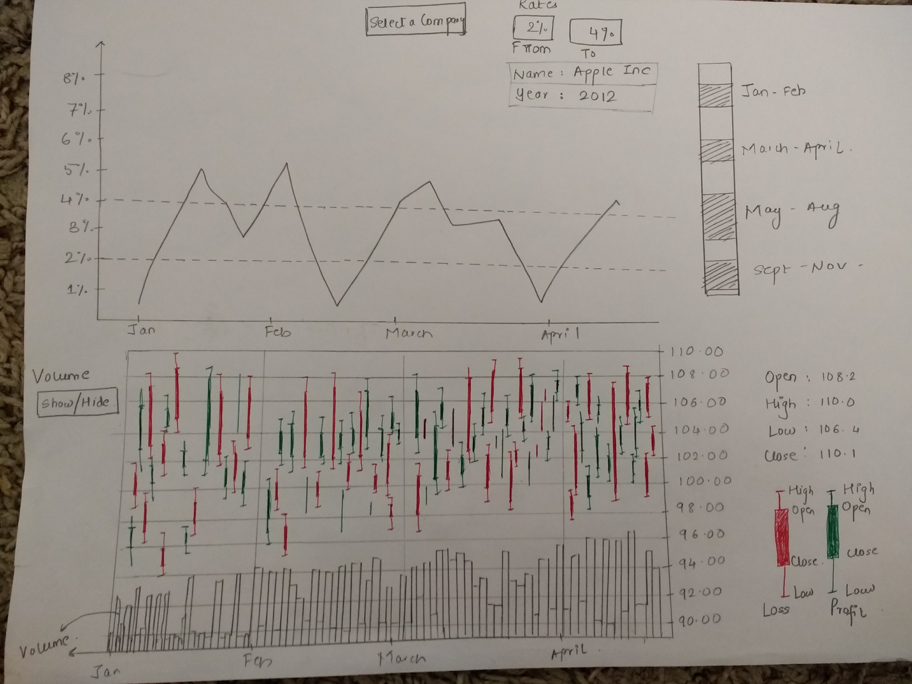

View 4

This is the fourth view which is an integrated view of first and second. This is an attempt to find everything at one place.
When interated with one of the chart the view of other chart also changes. Both the charts are intergrated and are relative.